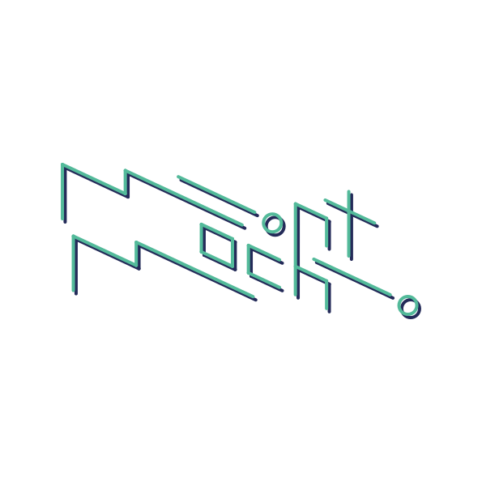

Motion Graphics Portfolio
m!ntmoch!
モーショングラフィックスを軸に、映像と平面の両方をつくっています。
Works
About
m!ntmoch! / Yusei Tomobe
静止しているものに「動き」が加わることで、楽しくなったり可愛くなったり、目を惹くものになる。 そういうところに魅力を感じていて、自分にとっての「動く美」、芯となるものを追求しています。 デザインは印象に残る体験こそが大事だと思っているので、それを軸に制作を心がけています。